El Portal de procesos es el sistema de Century Mold para pedir y autorizar tiempo extra y transporte. Nóminas usa lo que ya quedó autorizado para armar, cada semana y por área, el FORMATO DE AUTORIZACIÓN DE TIEMPO EXTRA: se revisa, se corrige si hace falta, se firma y se manda a pago. Además puedes confirmar el envío al proveedor cuando Recursos Humanos no está.
Cómo funciona el formato
Es una hoja por área y por semana (lunes a domingo). Muestra, por empleado, las horas de cada día, su motivo y su P.O. o TB.
Sale de las solicitudes autorizadas por Autorización 2 (estatus Autorizada o Confirmada por RH). Lo pendiente, devuelto, vencido o cancelado no cuenta.
Tú lo revisas y lo ajustas. Los ajustes no cambian las solicitudes: quedan aparte, cada uno con su motivo y su nombre.
Cuando está bien, lo marcas como firmado (queda bloqueado) y lo descargas en Excel.
La semana va de lunes a domingo (semana ISO). Por ejemplo, «Semana 47 · 16–22 nov 2026». El portal abre por defecto la última semana completa.
Lo que puedes hacer
Ver el formato de todas las áreas, por semana o por un rango de hasta 7 días.
Corregir horas, quitar, reemplazar y agregar empleados, y cambiar motivos y P.O./TB en el formato.
Guardar tus ajustes, deshacerlos, firmar un área y descargar el Excel (un área, las áreas con tiempo extra o todas).
Consultar todo el tiempo extra de la planta, las solicitudes de transporte, el Formato de rutas, el personal (con teléfono) y la estructura.
Confirmar el tiempo extra autorizado en Por enviar al proveedor y bajar el Formato de rutas, y descargar el resumen de horas extra.
Lo que NO puedes hacer
Autorizar, devolver, editar o cancelar solicitudes de tiempo extra.
Cambiar lo autorizado: tus ajustes solo afectan el formato.
Reabrir un área firmada: solo Recursos Humanos y el administrador.
Crear usuarios, restablecer contraseñas, dar roles (ni darte a ti mismo el rol de Nóminas).
Editar el padrón, la estructura o los catálogos: en Personal y Estructura solo consultas.
Ver los borradores de otras personas.
2. Primeros pasos
Entrar al portal
Abre https://centurymold-qro.web.app en tu navegador (Chrome, Edge o el de tu celular).
Escribe tu número de nómina.
Escribe tu contraseña. El ojito sirve para ver lo que escribes.
Toca Iniciar sesión.
Si no la recuerdas, toca ¿Olvidaste tu contraseña?. Solo se restablece en persona, con Recursos Humanos, un Autorizador 2 o Sistemas y tu identificación.
La primera vez que entras con una contraseña temporal, el portal te pide crear una contraseña nueva: mínimo 8 caracteres, con letras y números.
Tu pantalla de inicio
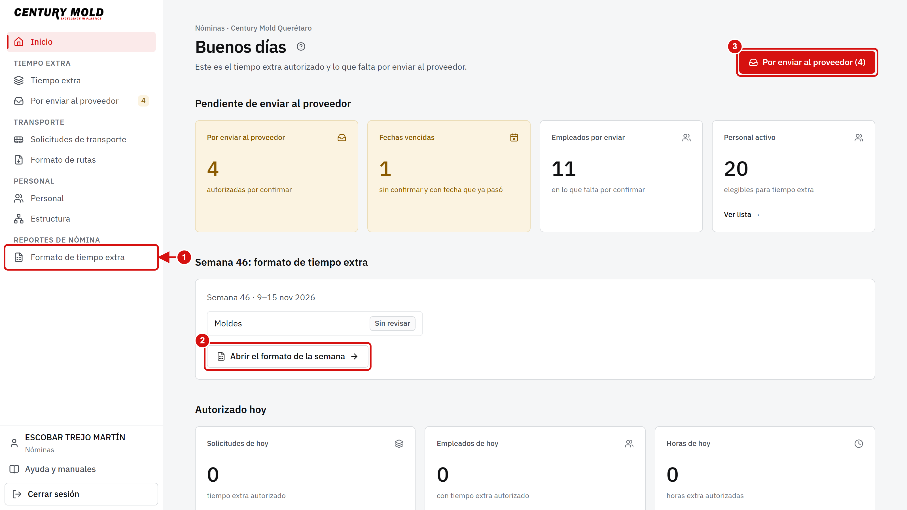
En el menú, bajo Reportes de nómina, está Formato de tiempo extra: tu pantalla principal.
Abrir el formato de la semana: te lleva a la última semana completa, con el estado de cada área (Sin revisar, Ajustada o Firmada).
Por enviar al proveedor: cuántas autorizadas esperan confirmación. Las tarjetas dicen también las fechas vencidas, los empleados por enviar y el personal elegible.
El menú
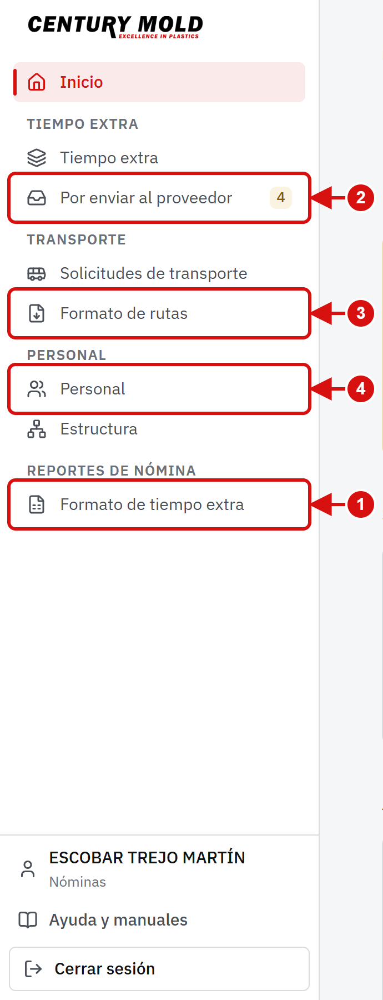
Formato de tiempo extra (Reportes de nómina).
Por enviar al proveedor, con su contador.
Formato de rutas: el Excel del proveedor.
Personal (y Estructura): solo consulta.
También tienes Tiempo extra (consulta) y Solicitudes de transporte. Abajo: Ayuda y manuales (este manual y su guía rápida en PDF) y Cerrar sesión. Por seguridad, la sesión se cierra a los 30 minutos sin usar: tus cambios sin guardar se pierden, así que guarda seguido.
3. Reportes de nómina: elegir la semana
Para qué sirve. Es la puerta del formato: elegir qué semana (o qué días) vas a trabajar y ver el estado de cada área. Cuándo se usa: cada semana, a partir del lunes.
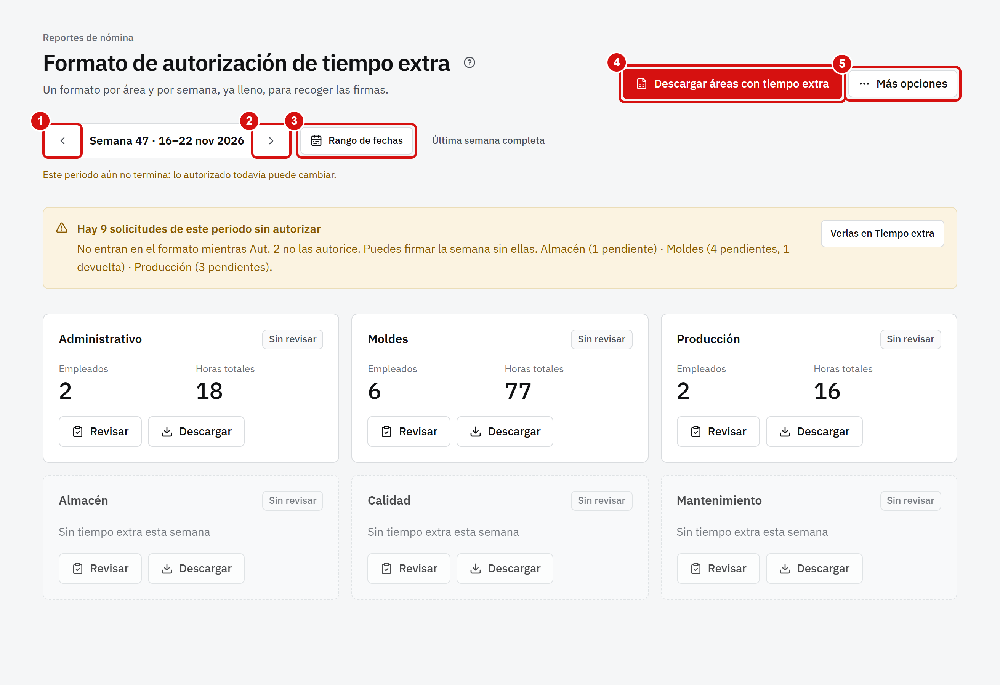
Semana anterior.
Semana siguiente. La pantalla abre en la última semana completa; para la semana en curso usa esta flecha.
Rango de fechas: en lugar de una semana, hasta 7 días.
Descargar áreas con tiempo extra: el Excel de todas las que tienen algo.
Más opciones: incluye Descargar todas las áreas.
Si la semana todavía no termina, el portal avisa: «Este periodo aún no termina: lo autorizado todavía puede cambiar». Conviene firmar cuando la semana ya terminó.
Las áreas de la semana
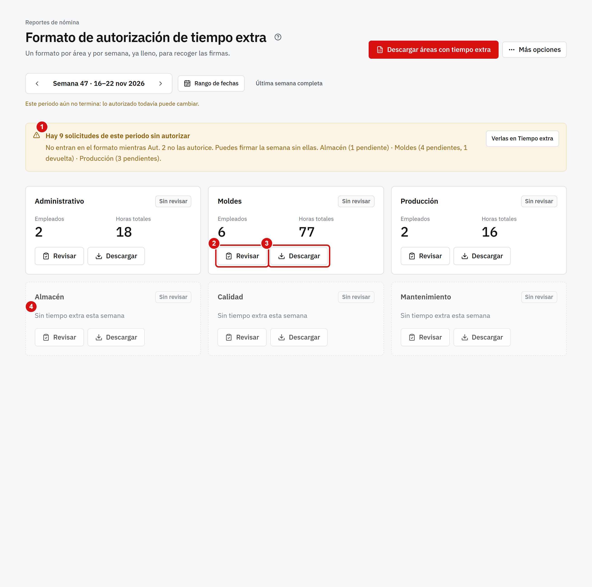
Arriba, avisos de lo que no entra al formato (siguiente apartado).
Revisar abre la hoja del área.
Descargar baja el Excel de esa área.
Las áreas sin tiempo extra dicen «Sin tiempo extra esta semana»; tienen Revisar por si hay que agregar a alguien a mano.
Cada tarjeta trae el estado del área: Sin revisar (aún no la tocas), Ajustada (guardaste cambios) o Firmada (bloqueada), además de los empleados y las horas totales.
Qué no entra al formato
Sin autorizar: solicitudes del periodo todavía pendientes o devueltas. El aviso dice cuántas y de qué áreas. No entran mientras Autorización 2 no las autorice, y puedes firmar la semana sin ellas. Verlas en Tiempo extra las muestra.
Vencidas: pasó el día sin autorizarse. No cuentan. Si alguien sí trabajó, pide a Autorización 2 que la autorice fuera de tiempo, o agrégalo a mano en Revisar.
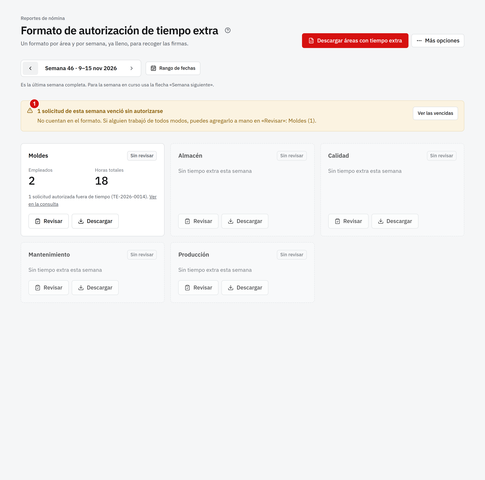
El aviso de vencidas aparece en la semana donde cayeron, con el botón Ver las vencidas.
Un rango de fechas
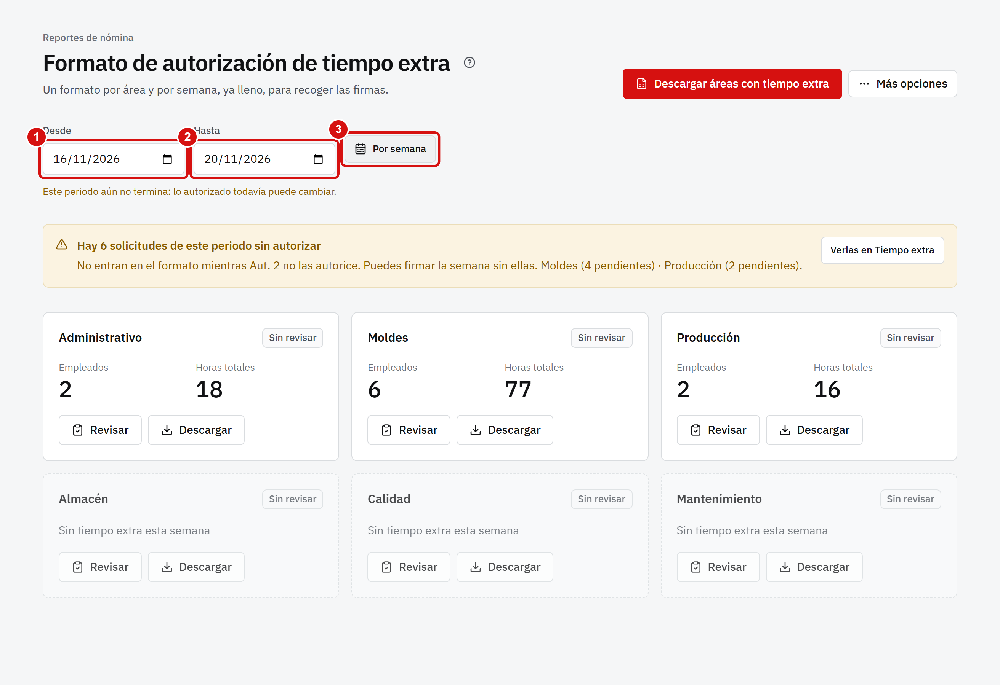
Desde.
Hasta. Máximo 7 días, y la fecha final no puede ser anterior.
Por semana regresa a elegir una semana.
Descargar de una vez
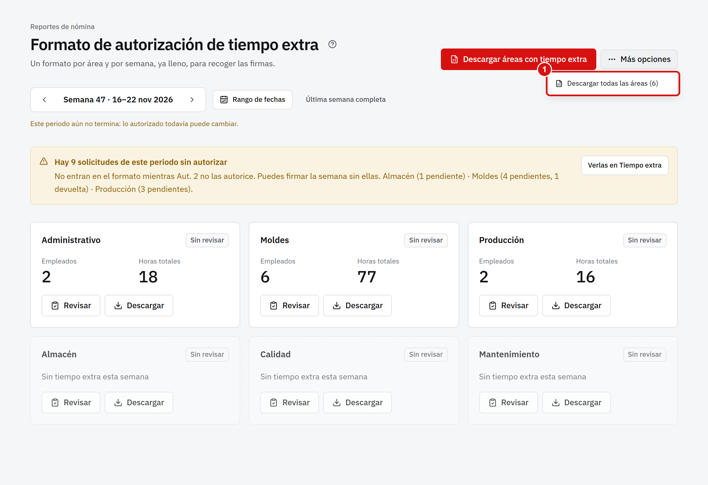
Descargar todas las áreas baja un solo Excel con las seis áreas (las vacías en blanco) y la hoja Resumen. Más adelante se explica cómo leerlo.
4. Revisar un área, como una hoja de cálculo
Para qué sirve. Ver lo autorizado de un área y corregirlo antes de firmar. Toca Revisar en la tarjeta del área.
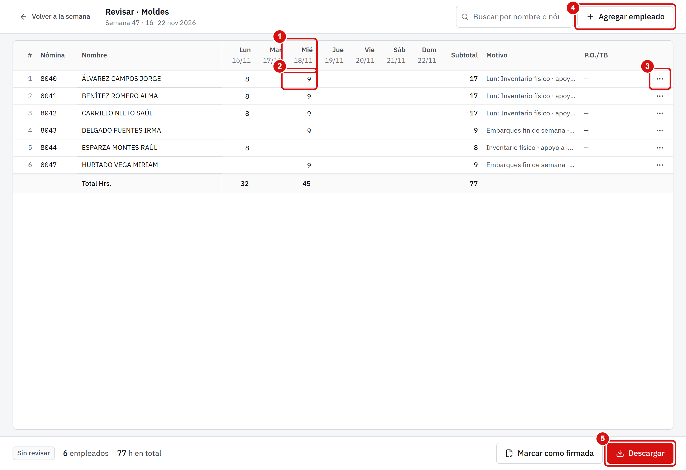
Cada columna es un día de la semana, con su fecha. Después van Subtotal, Motivo y P.O./TB.
Cada celda trae las horas autorizadas de ese empleado ese día. Se escribe directo.
El menú ⋯ de la fila: quitar, reemplazar, cambiar motivo y P.O./TB, o restaurar.
Agregar empleado: para quien no venía en las solicitudes.
Descargar: el Excel del área (se apaga si hay cambios sin guardar).
Abajo ves, de un vistazo, el estado del área y cuántos empleados y horas lleva en total. Una fila con varios motivos (por ejemplo, un día por inventario y otro por embarque) los muestra juntos. El buscador de arriba filtra por nombre o nómina. Volver a la semana regresa a la lista de áreas.
Todo lo que ves viene de lo autorizado. Lo que cambies aquí no modifica las solicitudes: son ajustes del formato.
5. Corregir las horas de un día
Para qué sirve. Cuando alguien trabajó más o menos de lo autorizado. Cuándo se usa: cuando llegan las listas de asistencia.
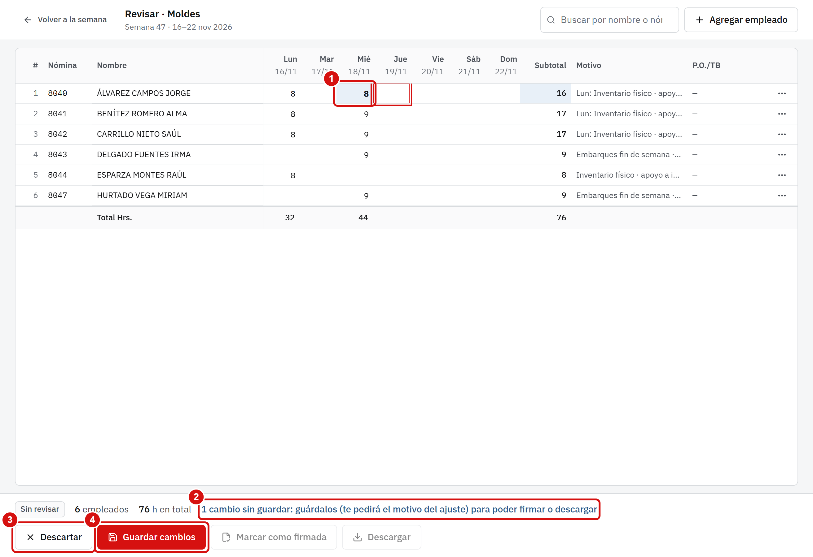
Haz clic en la celda y escribe las horas. Acepta medios y cuartos (0.5, 7.25); también con coma. Vacío = sin horas.
Pulsa Enter, Tab o una flecha para confirmar y pasar a la siguiente celda.
La celda cambiada se pinta de otro color y el subtotal se actualiza. Abajo dice cuántos cambios sin guardar llevas.
Descartar tira esos cambios sin guardar. Guardar cambios los guarda (siguiente sección).
Con cambios sin guardar, Marcar como firmada y Descargar están apagados: el Excel solo lleva lo guardado.
6. Quitar, reemplazar y cambiar el motivo de un empleado
Todo esto se hace con el menú ⋯ de cada fila.
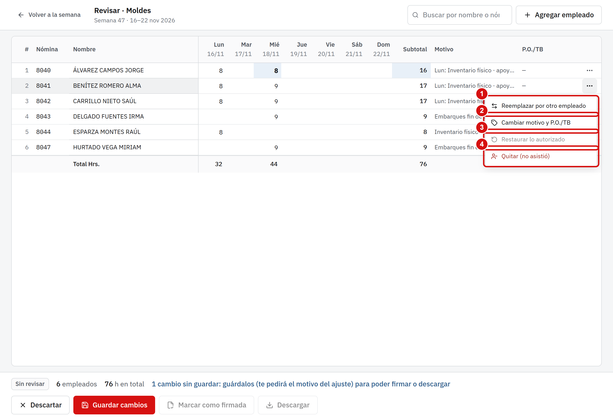
Reemplazar por otro empleado: sus horas pasan a quien elijas.
Cambiar motivo y P.O./TB.
Restaurar lo autorizado: regresa esa fila a como venía (se enciende cuando hay algo que restaurar).
Quitar (no asistió).
Quitar a alguien que no asistió
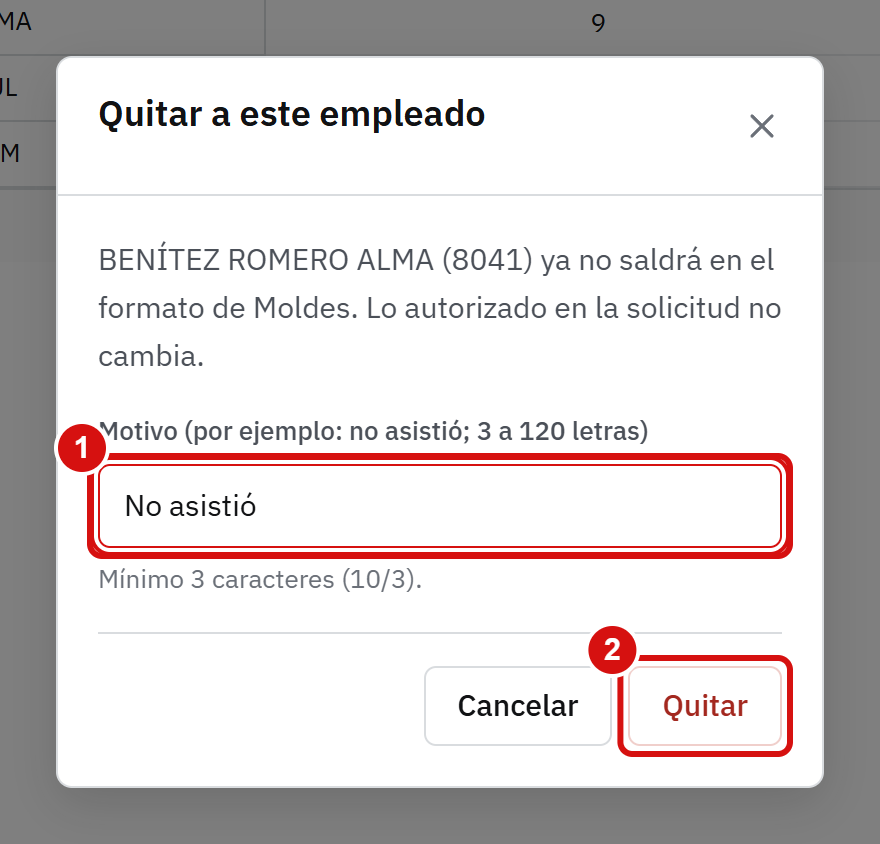
Escribe el motivo (por ejemplo, «No asistió»), de 3 a 120 letras. Se pide en el momento.
Toca Quitar.
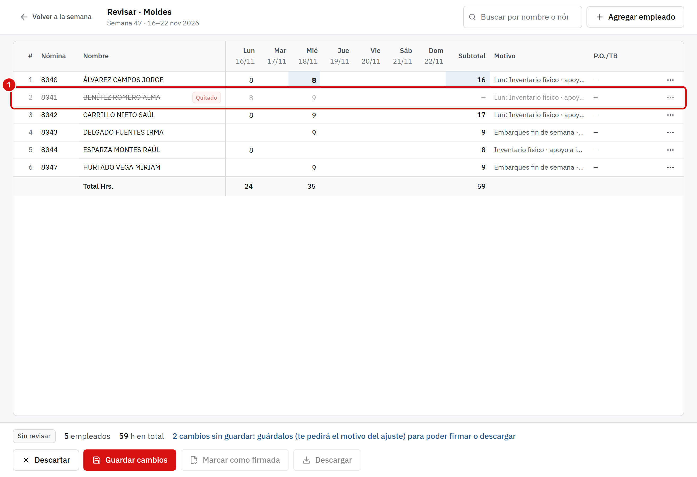
La fila queda tachada con la etiqueta «Quitado» y ya no cuenta en el total. Lo autorizado en la solicitud no cambia.
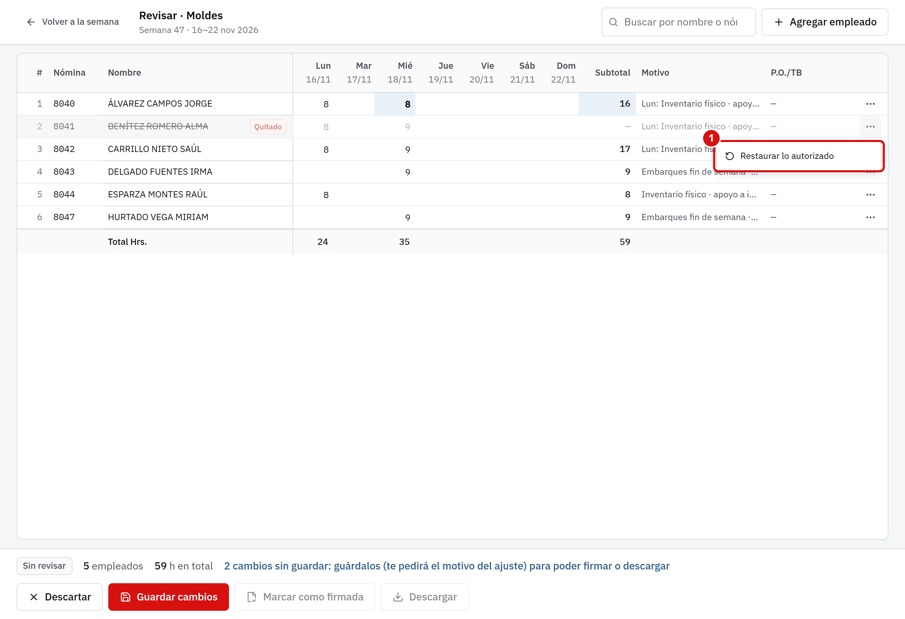
Para regresarla, abre su menú ⋯ y toca Restaurar lo autorizado.
Reemplazar a alguien
Úsalo cuando fue otra persona la que trabajó. Sale el titular y entra su reemplazo, con las mismas horas, y la fila lo indica («Reemplaza a …»).
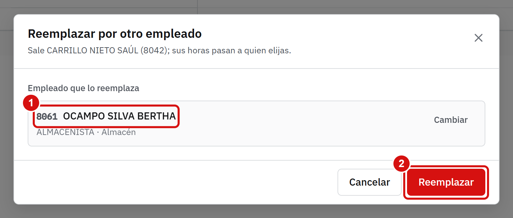
Busca y elige a quien lo reemplaza (por nómina o nombre).
Toca Reemplazar.
Cambiar el motivo y el P.O./TB
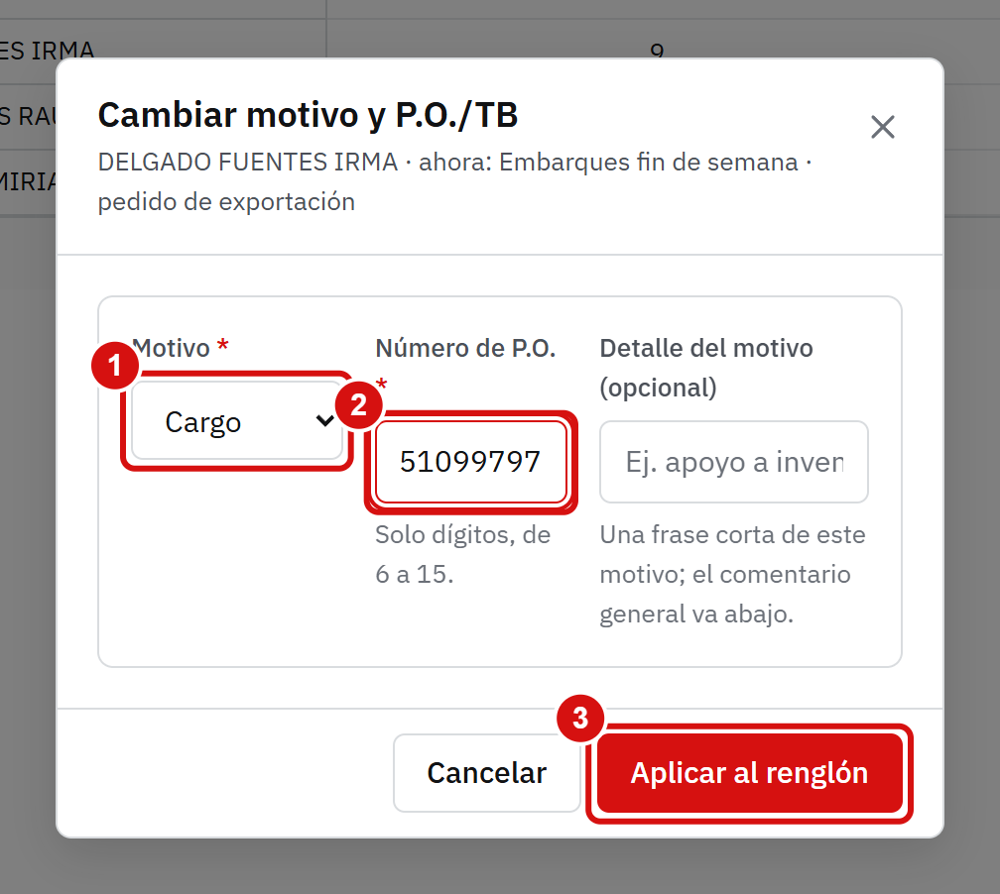
Elige el motivo. Si el motivo lleva número (Cargo a P.O. o a TB), aparece el campo del número.
Escribe el número (solo dígitos, de 6 a 15) y, si quieres, un detalle.
Toca Aplicar al renglón.
La columna P.O./TB del Excel lleva el número de cada empleado, para que el área de cuentas por pagar lo cargue.
7. Agregar a un empleado que no venía
Para qué sirve. Cuando alguien trabajó tiempo extra que no se capturó (o venció sin autorizarse). Cuándo se usa: de vez en cuando.
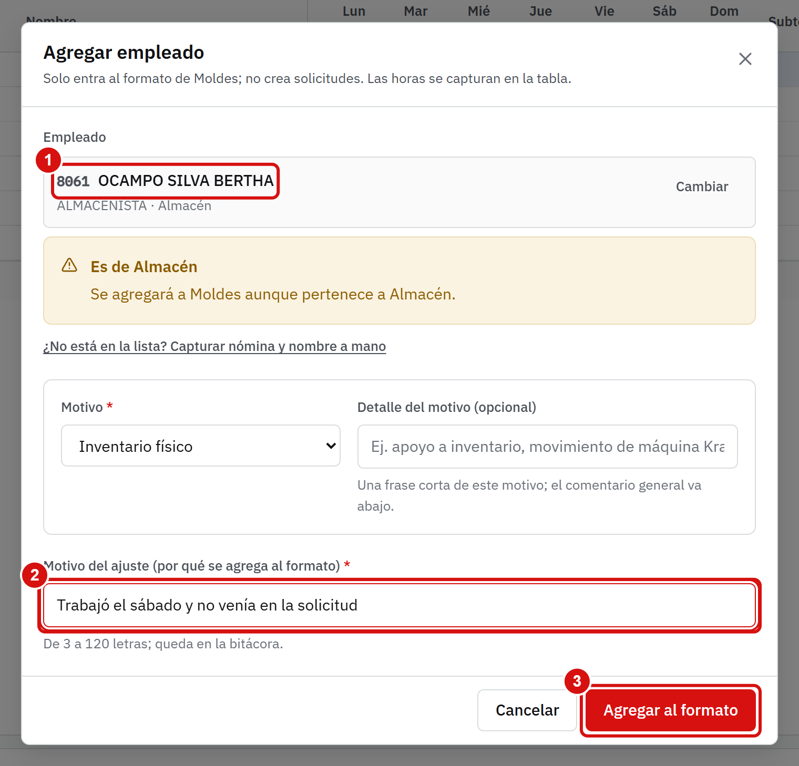
Busca a la persona por nómina o nombre y elígela. Si no está en el padrón puedes capturarla a mano (queda marcada «fuera del padrón»).
Elige el motivo del tiempo extra y, si quieres, un detalle.
Escribe el motivo del ajuste (por qué se agrega, de 3 a 120 letras).
Toca Agregar al formato.
Si la persona es de otra área, el portal avisa («Es de Almacén: se agregará a Moldes aunque pertenece a Almacén»); puedes seguir.
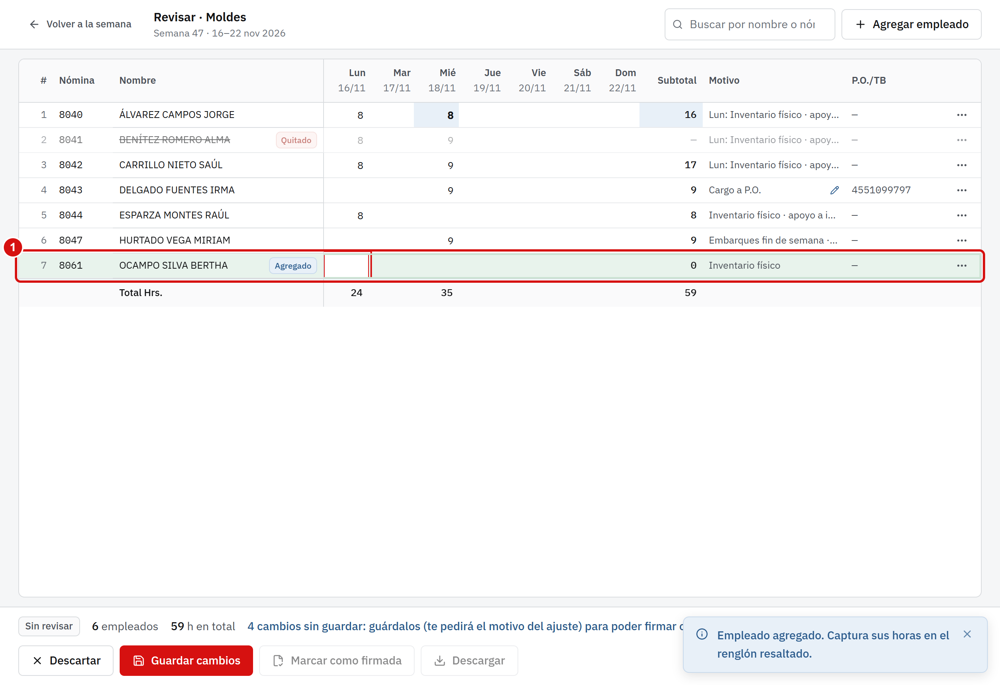
La fila nueva se resalta unos segundos con la etiqueta «Agregado» y el cursor queda en su primera celda: captura sus horas.
Agregar a alguien no crea una solicitud: solo entra al formato de esa área y semana. Si de verdad corresponde pagarle, queda en el Excel con el motivo que escribiste.
8. Guardar, descartar y deshacer
Guardar los cambios
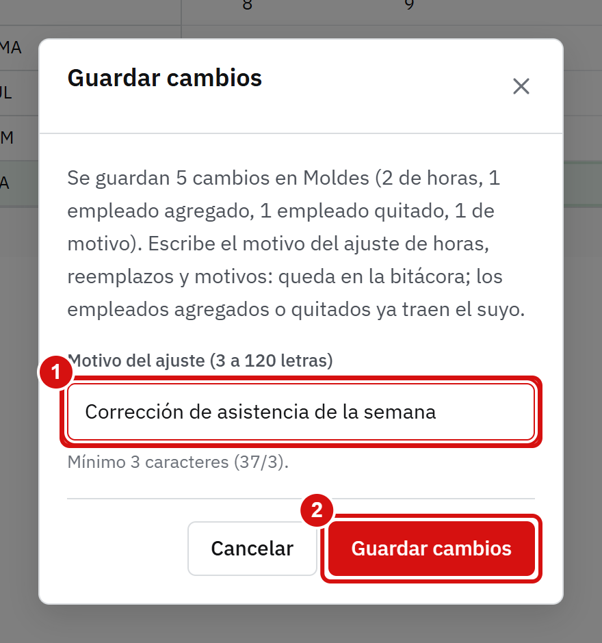
Toca Guardar cambios.
Si hay cambios de horas, reemplazos o de motivo, escribe el motivo del ajuste (de 3 a 120 letras): se aplica a todos y queda en la bitácora. Lo que agregaste o quitaste ya trae el suyo.
Confirma con Guardar cambios.
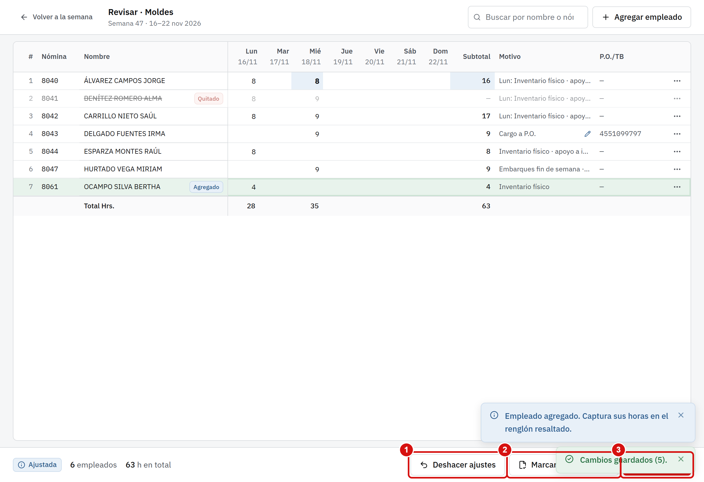
El área queda Ajustada y aparece Deshacer ajustes.
Marcar como firmada y Descargar se encienden.
El aviso dice cuántos cambios se guardaron.
Deshacer los ajustes
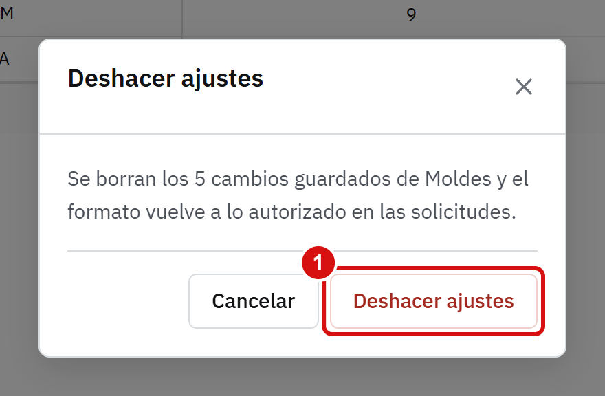
Deshacer ajustes borra todos los cambios guardados del área y el formato vuelve a lo autorizado en las solicitudes. Pide confirmación.
Descartar (con cambios sin guardar) tira solo lo que todavía no guardaste. Deshacer ajustes borra lo ya guardado. Si sales de la pantalla con cambios sin guardar, el portal pregunta si quieres salir sin guardar.
9. Firmar el área
Para qué sirve. Cuando el formato ya tiene las firmas en papel y está correcto, lo marcas como firmado: queda bloqueado y nadie lo cambia. Cuándo se usa: una vez por área y semana.
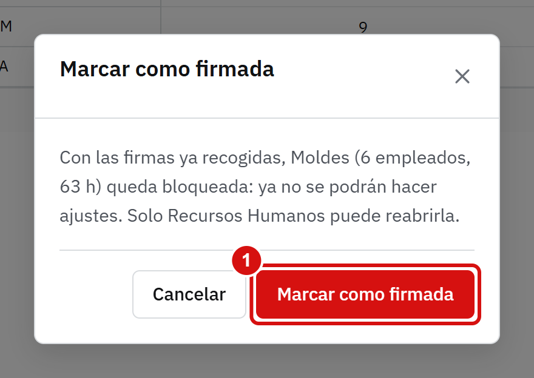
Toca Marcar como firmada y confirma. Solo se puede si no tienes cambios sin guardar y el área tiene empleados.
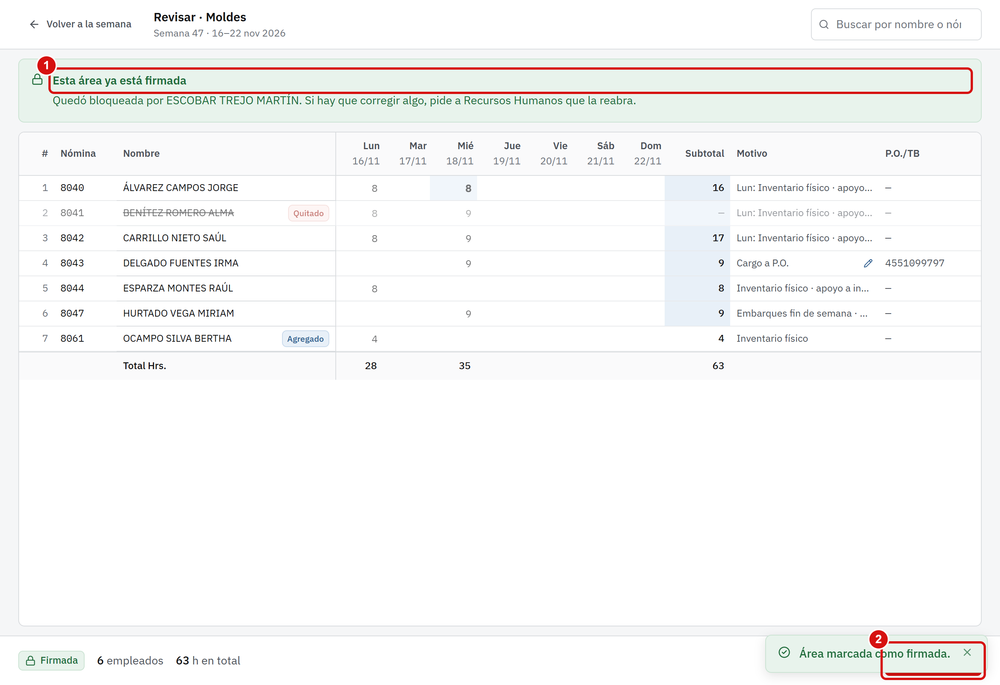
El aviso dice que el área ya está firmada, por quién y que, si hay que corregir algo, pida a Recursos Humanos que la reabra.
Descargar sigue disponible: baja el Excel con lo firmado.
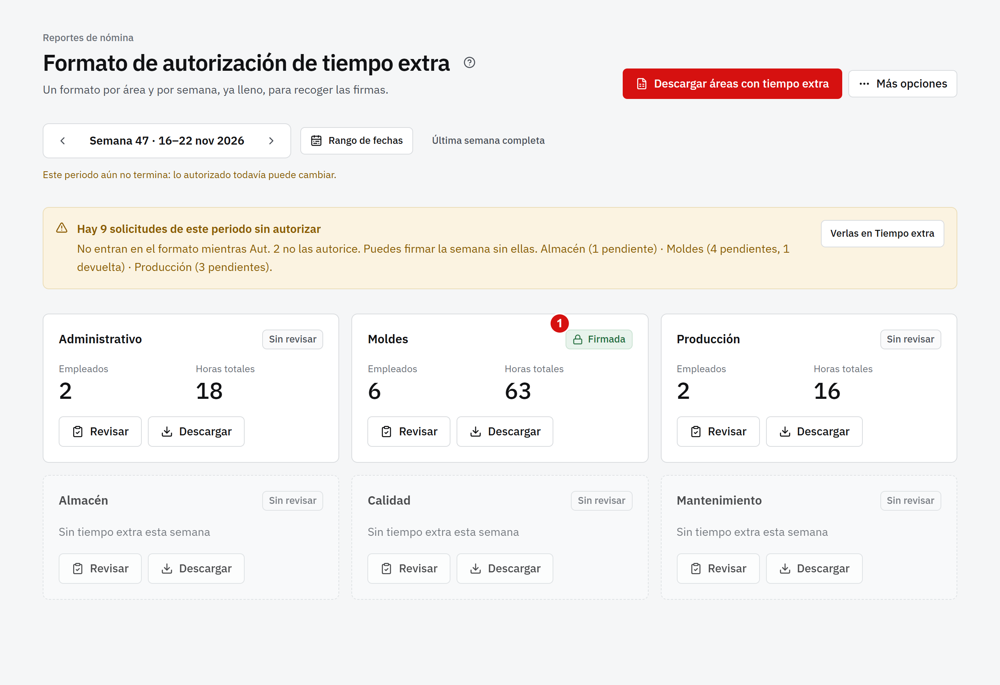
En la lista de la semana, el área aparece como Firmada.
Una vez firmada, solo Recursos Humanos o el administrador pueden reabrirla (botón Reabrir en la revisión del área). Tú no. Si necesitas corregir, avísales; los ajustes y motivos que ya había se conservan.
10. Descargar el Excel y cómo leerlo
Hay tres descargas, todas del mismo formato:
Descargar en una tarjeta de área o dentro de la revisión: el Excel de esa área.
Descargar áreas con tiempo extra: todas las áreas que tienen algo, con la hoja Resumen.
Descargar todas las áreas (en Más opciones): las seis áreas, las vacías en blanco, con la hoja Resumen.
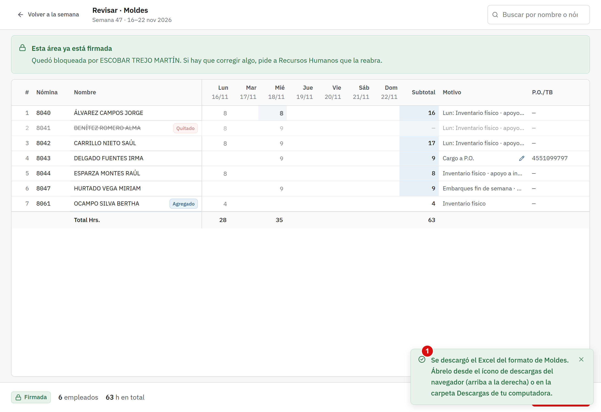
Al terminar, el aviso dice qué archivo se descargó. Ábrelo desde el ícono de descargas del navegador o en la carpeta Descargas. Los nombres son parecidos a «Tiempo extra semana 47 - todas las areas.xlsx».
La hoja de un área
Es la réplica del formato en papel (carta horizontal, una hoja por área; con más de 15 empleados continúa en otra página).
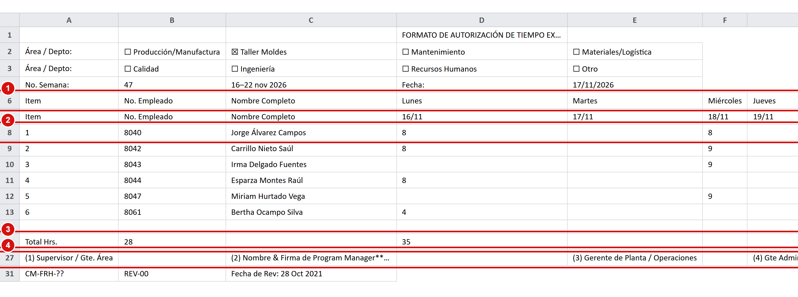
Arriba: el área (casilla marcada), el número de semana, las fechas y la fecha de impresión.
La fila de días: lunes a domingo con su fecha.
Cada fila: Item, No. Empleado, nombre, las horas de cada día, el Sub-Total, el P.O./TB y la descripción del motivo (si cambió de un día a otro, lo dice por día).
Total Hrs.: lo de cada día y el total de la semana.
Abajo, los recuadros de firmas (supervisor, program manager si hay P.O./TB, gerente de planta y RRHH) y las notas del formato.
La hoja Resumen
Solo viene en las descargas de varias áreas. Sirve para capturar la nómina y para ver el panorama de la semana.
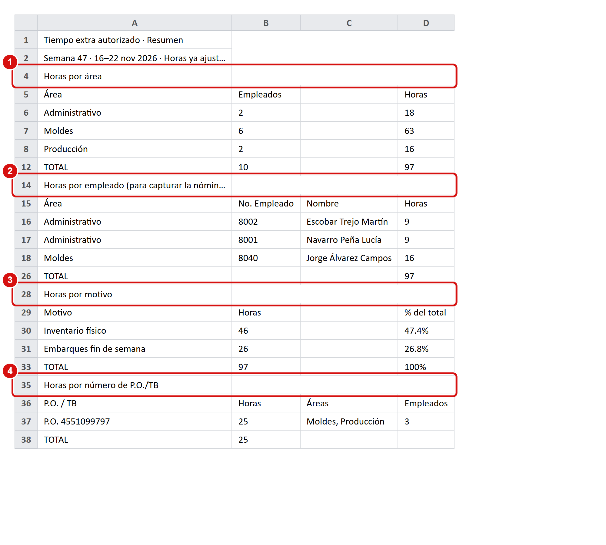
Horas por área: empleados y horas de cada área, con el total.
Horas por empleado (para capturar la nómina): área, número, nombre y horas de cada persona.
Horas por motivo: cuántas horas y qué porcentaje del total por cada motivo.
Horas por número de P.O./TB: horas, áreas y empleados de cada P.O. o TB.
Las horas del Excel ya llevan tus ajustes (la hoja Resumen lo dice: «Horas ya ajustadas por Nóminas»). Si el área no está guardada, el Excel solo lleva lo guardado. Una semana todavía en curso se puede descargar, pero lo autorizado puede cambiar.
11. Por enviar al proveedor y Formato de rutas (cuando cubres a RH)
Cuando Recursos Humanos no está, tú puedes confirmar el tiempo extra autorizado y bajar el Excel del proveedor de transporte. La pantalla es la misma que usa Recursos Humanos; solo confirma: no devuelve ni cancela.
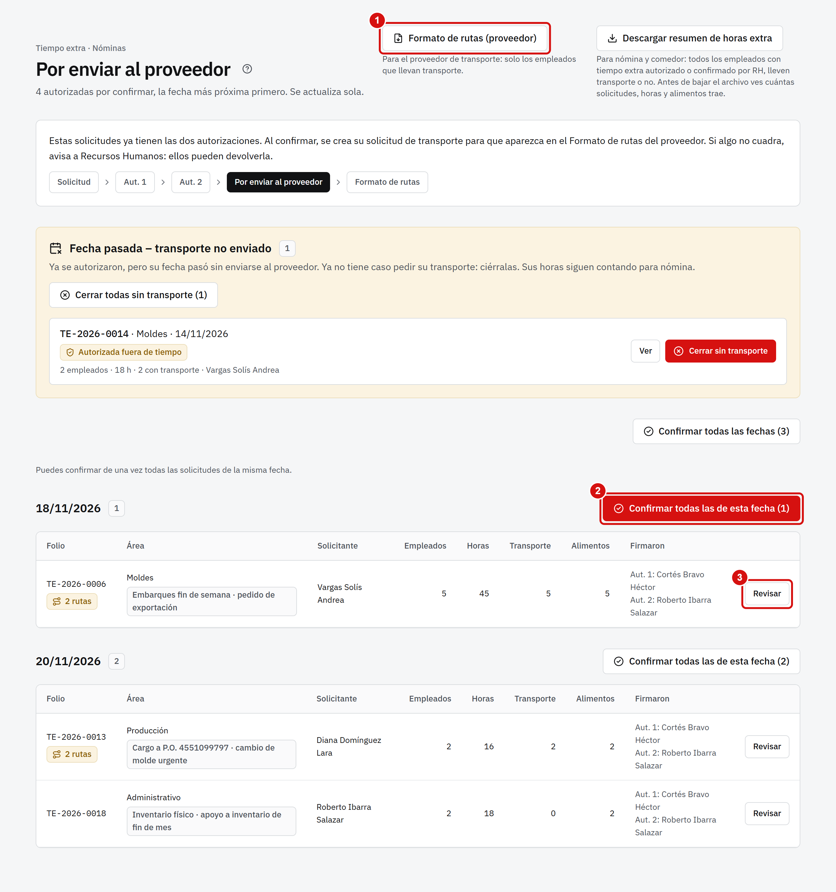
Formato de rutas (proveedor).
Confirmar todas las de esta fecha: confirma el grupo de un día (también hay Confirmar todas las fechas).
Revisar abre la solicitud; ahí está Confirmar y generar transporte.
Confirmar crea la solicitud de transporte de cada solicitud con empleados en transporte; las que no llevan, se confirman sin generar nada.
Si la fecha del tiempo extra ya pasó, el portal ya no crea transporte: se cierra «sin transporte» y sus horas siguen contando para nómina.
Para devolver o cancelar, pide ayuda a Recursos Humanos.
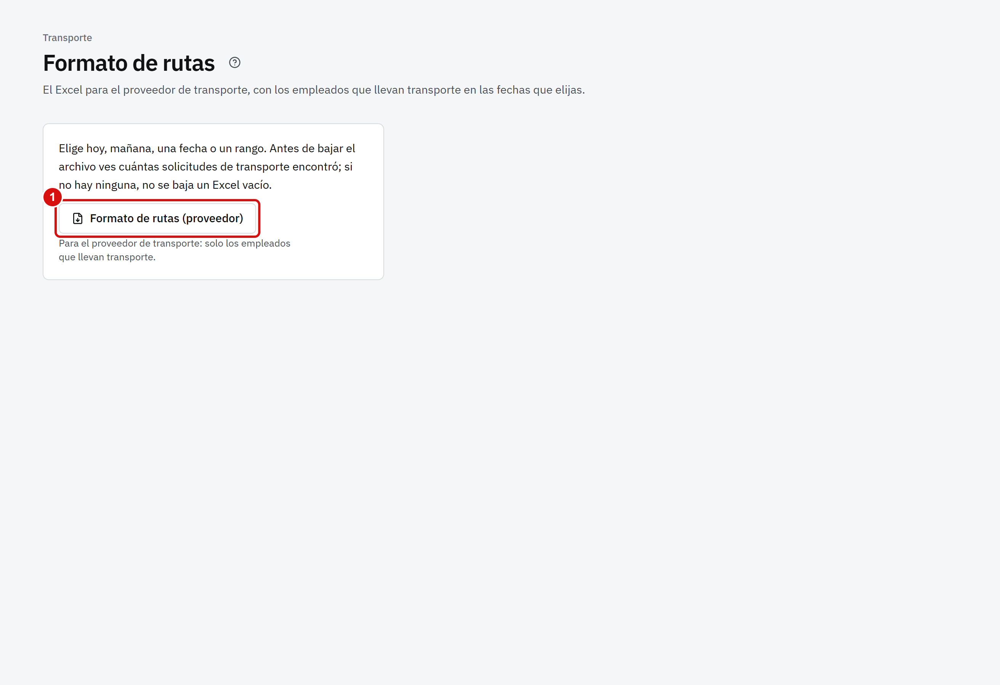
Formato de rutas: elige Hoy, Mañana, una fecha o un rango y baja el Excel (Transporte_AAAA-MM-DD.xlsx). Solo lleva a quienes van en transporte, con ruta, comunidad, punto de reunión, horario y teléfono. Si dice «No hay tiempo extra confirmado», primero confirma.
La aplicación no avisa al proveedor: el archivo lo manda quien lo baja. Lo que cruza la medianoche lleva el viaje de regreso el día siguiente.
Solicitudes de transporte
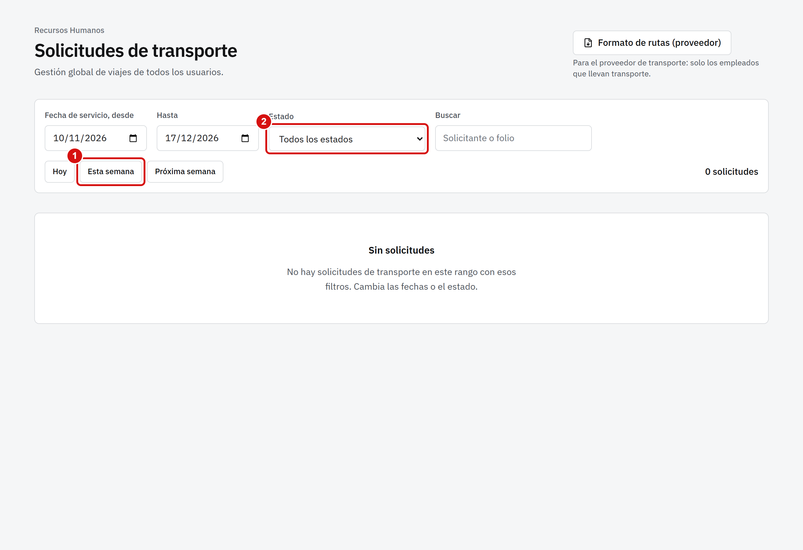
Hoy, Esta semana y Próxima semana (o las fechas desde y hasta).
Estado y buscador por solicitante o folio.
Aquí solo ves y descargas. La lista queda vacía hasta que alguien confirma tiempo extra con empleados en transporte.
12. Consultar: tiempo extra, personal y estructura
Tiempo extra (consulta)
Toda la planta, en cualquier estatus menos los borradores, con su detalle e historial. Es de solo lectura.
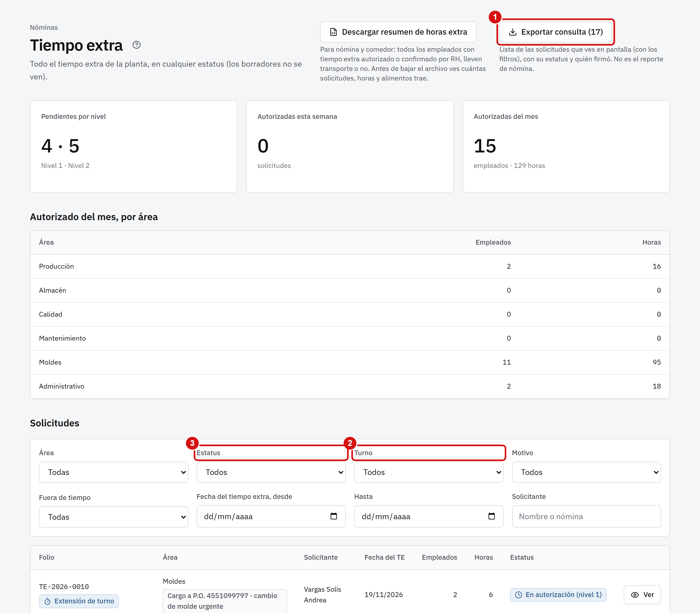
Exportar consulta (n): Excel con lo que ves (con estatus y quién firmó). No es el reporte de nómina.
Filtro de turno (A, B o C): útil para nómina.
Filtro de estatus: por ejemplo, para encontrar las vencidas o las pendientes que no entran al formato.
Arriba ves los resúmenes: pendientes por nivel, autorizadas de la semana y lo autorizado del mes por área. Junto a Exportar consulta está Descargar resumen de horas extra: todos los empleados con tiempo extra autorizado o confirmado, lleven transporte o no (para nómina y comedor).
Personal
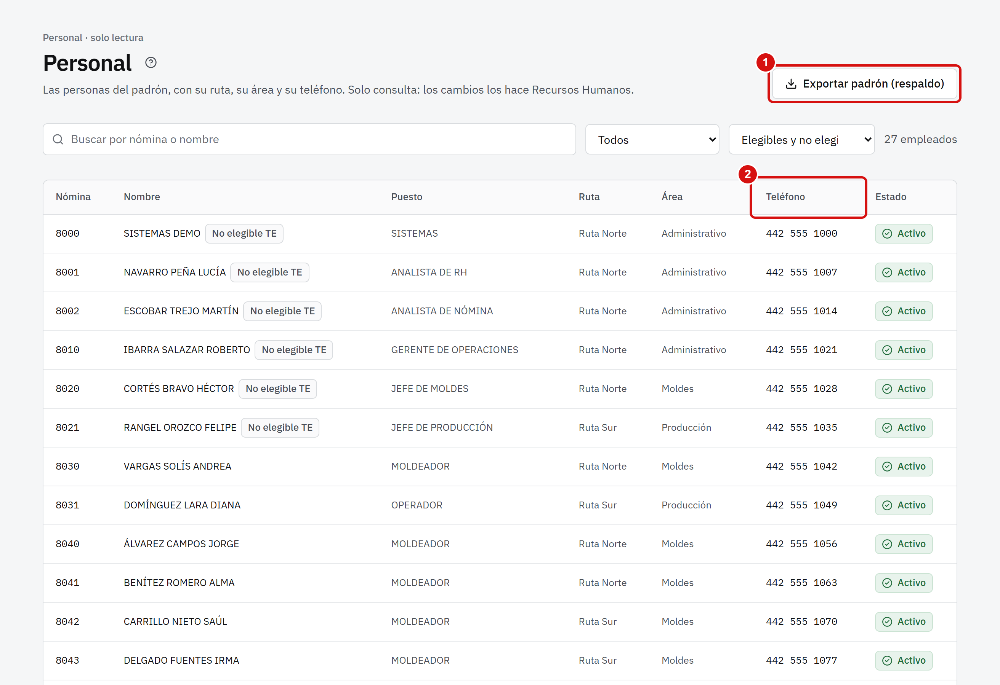
Exportar padrón (respaldo).
Aquí, además de nómina, nombre, puesto, ruta y área, ves el teléfono (que se manda al proveedor). Es solo consulta: los cambios los hace Recursos Humanos.
Estructura
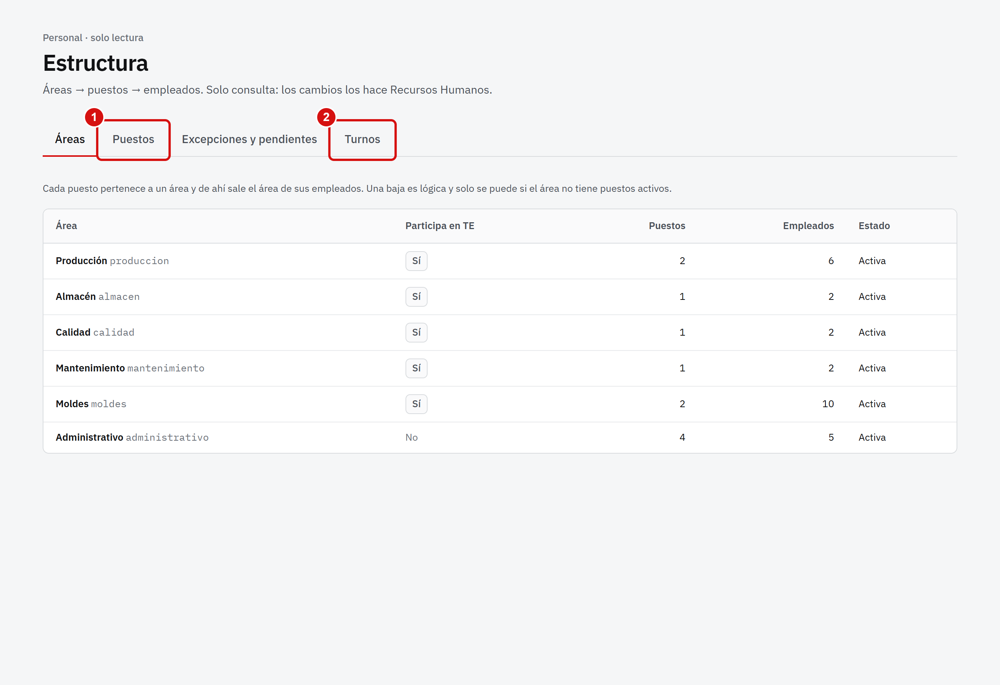
Puestos: cada puesto con su área y nivel.
Turnos: el horario normal de cada turno. Solo consulta.
También puedes ver la lista del personal elegible (desde el Inicio, Personal activo › Ver lista).
13. Casos especiales
La semana ya estaba firmada y falta algo
Pide a Recursos Humanos que reabra el área (en la revisión del área, botón Reabrir). Cuando la reabra, agrega o corrige, guarda con su motivo y vuelve a firmar. Los ajustes anteriores se conservan.
Falta una solicitud en el formato
Solo entra lo autorizado por Autorización 2. Mira el aviso de la semana: «sin autorizar» (pendientes o devueltas) y «vencidas» no cuentan.
Búscala en Tiempo extra: te dice su estatus y en qué nivel está.
Si está pendiente, avisa a Autorización 2. Si venció y sí se trabajó, pide a Autorización 2 que la autorice fuera de tiempo, o agrega a las personas a mano en la revisión del área.
Alguien trabajó pero nunca se capturó
Agrégalo con Agregar empleado (sección anterior), con su motivo del tiempo extra y el motivo del ajuste. No se crea ninguna solicitud: solo entra al formato.
Alguien que está en la solicitud no asistió
Quítalo con Quitar (no asistió) y escribe el motivo. La solicitud no cambia; el formato ya no lo cuenta.
Trabajó otra persona en su lugar
Usa Reemplazar por otro empleado. Si trabajó además, agrégalo aparte.
Me equivoqué al ajustar
Antes de guardar: Descartar, o Restaurar lo autorizado en la fila.
Ya guardado: corrige la celda y guarda otra vez, o usa Deshacer ajustes para volver todo a lo autorizado.
Ya firmado: pide a Recursos Humanos que reabra.
No puedo firmar ni descargar
Tienes cambios sin guardar. Toca Guardar cambios primero. También se apagan si el área no tiene empleados.
El proveedor no recibió a alguien
La app no avisa al proveedor. Revisa: que la solicitud estuviera Confirmada por RH; que la persona llevara transporte (ruta, comunidad y punto); que salga en el Formato de rutas del día correcto (ojo con lo que cruza la medianoche: el regreso va al día siguiente); que su teléfono esté en Personal; y que el archivo se mandó al proveedor después de confirmar. Para corregir datos de una persona, avisa a Recursos Humanos.
Mis cambios sin guardar se perdieron
La sesión se cierra a los 30 minutos sin usar, y lo no guardado se pierde. Guarda con frecuencia, aunque no hayas terminado el área.
14. Preguntas frecuentes
Mi semana sale vacía.Al entrar se abre la última semana completa. Para la semana en curso, toca «Semana siguiente». Si aun así no hay nada, no hay tiempo extra autorizado esa semana.
¿Mis ajustes cambian las solicitudes?No. Son ajustes del formato, aparte, con su motivo y su nombre. Las solicitudes quedan como se autorizaron.
¿Puedo firmar una semana que no ha terminado?Se puede, pero lo autorizado todavía puede cambiar: después habría que pedir a Recursos Humanos que reabra el área. Conviene esperar al domingo.
¿Puedo firmar sin las solicitudes pendientes?Sí. Mientras no estén autorizadas no entran al formato; el aviso de la semana lo dice.
¿Quién puede reabrir un área firmada?Solo Recursos Humanos y el administrador. Tú no.
El Excel no trae mis últimos cambios.El Excel lleva solo lo guardado. Toca Guardar cambios y descarga otra vez.
¿Por qué el Excel de un área no trae la hoja Resumen?La hoja Resumen viene en las descargas de varias áreas (Descargar áreas con tiempo extra y Descargar todas las áreas).
Se cerró mi sesión.Por seguridad se cierra a los 30 minutos sin usar. Entra de nuevo; lo ya guardado no se pierde, pero lo no guardado sí.
15. Qué significa cada estatus
Así afecta cada estatus del tiempo extra al formato de nómina:
Estatus
Qué significa
Qué haces tú
Borrador
Alguien la guardó y todavía no la envía. Solo la ve quien la armó.
Nada. No la ves.
En autorización (nivel 1)
Espera la firma del jefe de su área.
Nada. No entra al formato de nómina. La ves en Tiempo extra.
En autorización (nivel 2)
Ya firmó el jefe de área; espera la segunda firma.
Nada. No entra al formato mientras Autorización 2 no la autorice.
Devuelta
Alguien pidió que se corrija.
Nada. No entra al formato hasta que se corrija y se autorice.
Autorizada
Tiene las firmas necesarias.
Entra al formato de su semana y área. Puedes confirmarla en Por enviar al proveedor.
Confirmada por RH
Recursos Humanos (o tú) la confirmó y se creó su transporte.
Entra al formato igual que una autorizada.
Vencida
Pasó el día del tiempo extra sin terminar de autorizarse.
No cuenta en el formato. Si alguien sí trabajó, agrégalo a mano en Revisar, con su motivo.
Cancelada
Se canceló (con un motivo).
No cuenta en el formato.
Estados del área en Reportes de nómina: Sin revisar (nadie la ha ajustado), Ajustada (hay cambios guardados) y Firmada (bloqueada; solo RH la reabre).